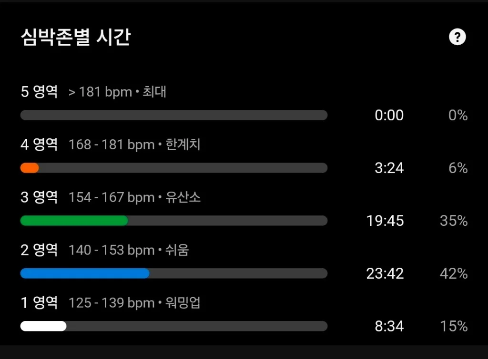
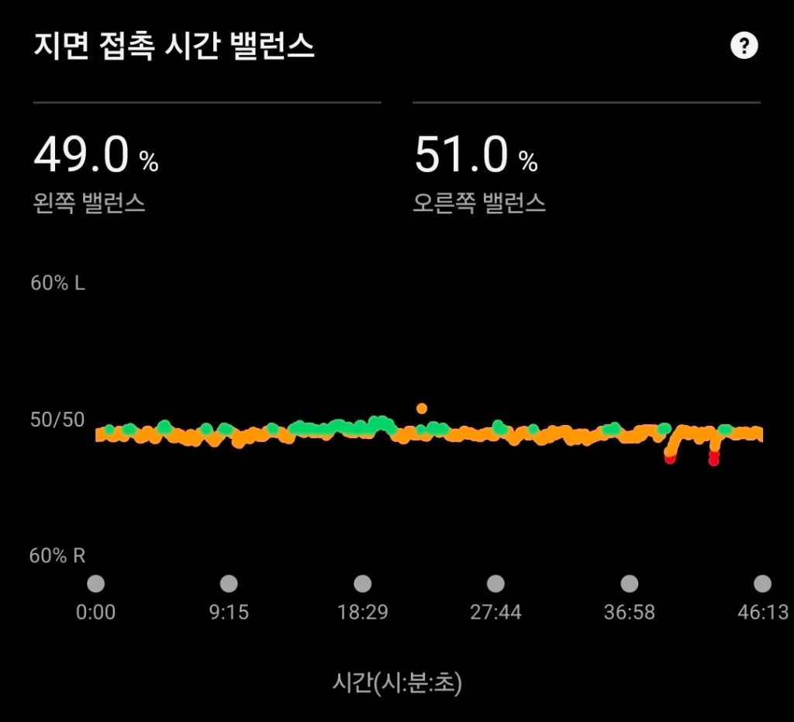
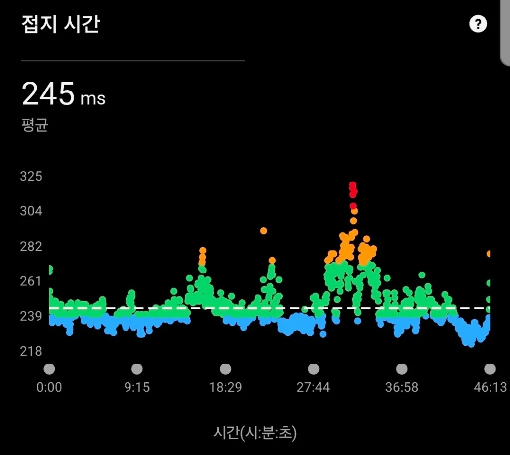

러닝화의 수명은 겉으로 보이는 바닥 고무가 아니라, 눈에 잘 띄지 않는 중창 쿠션(스펀지 폼)의 탄력에서 결정됩니다. 수십만 번 땅을 디디면서 쿠션 속 작은 공기 방울들이 터져 주저앉으면, 충격 흡수 능력이 뚝 떨어져 그 충격이 무릎으로 올라옵니다. 소재별 수명과 내 신발 교체 시기를 3초 만에 확인하는 법을 정리했습니다.

📸 실제 사진 1: 쿠션 옆면 주름: 600km 넘게 뛴 뒤 쿠션 옆면에 자글자글하게 생긴 깊은 주름. 공기 방울이 탄력을 잃어 땅에 닿을 때 딱딱한 느낌이 듭니다.

📸 실제 사진 2: 뒤꿈치 안쪽 닳음: 신발 뒤꿈치 안쪽 천이 닳아 구멍이 나면 발뒤꿈치를 잡아 주는 힘이 떨어져 발목이 흔들리기 쉽습니다.
1. 쿠션이 찌그러지면 다시 돌아오지 않습니다
러닝화 쿠션 안에는 눈에 보이지 않는 아주 작은 공기 방울들이 수백만 개 들어 있습니다. 발이 땅에 닿을 때 이 방울들이 눌리면서 충격을 흡수하고, 발을 뗄 때 다시 펴지면서 튕겨 나가는 힘을 만듭니다.
⚠️ 수명이 다한 쿠션의 특징
보통 500~700km 이상 달리고 나면 이 작은 방울들의 벽이 찌그러져서 다시 부풀어 오르지 못합니다. 신발 굽 높이가 2~4mm가량 낮아지고 옆면에 깊은 주름이 패이며, 바닥에서 올라오는 충격이 고스란히 정강이와 무릎으로 전해집니다.
2. 러닝화 쿠션 소재별 수명 비교
요즘 러닝화에 쓰이는 쿠션 소재는 크게 세 가지로 나뉘며, 소재마다 탄력과 수명이 다릅니다.

밀도가 높고 탄탄한 일반 쿠션 계열
공기 방울이 고르게 들어간 푹신한 쿠션| 쿠션 소재 | 반발력 (튕기는 힘) | 평균 수명 | 수명이 다했을 때 증상 |
|---|---|---|---|
| 일반 스펀지 (EVA) | 보통 (50 ~ 60%) | 500 ~ 650km | 돌처럼 딱딱해지고 쿠션이 꺼진 느낌이 바로 듦 |
| 튼튼한 발포 폼 (TPU 등) | 좋음 (70 ~ 78%) | 800 ~ 1,000km (오래 감) | 날씨 영향을 덜 받고 주름도 적지만 약간 무거운 편 |
| 고반발 레이싱 폼 (PEBA) | 아주 좋음 (85 ~ 90%) | 350 ~ 450km (짧음) | 가볍고 튕기는 힘은 최고지만 쿠션이 빨리 찌그러짐 |
3. 내 러닝화를 바꿀 때가 되었는지 3초 만에 확인하는 법
🧪 3가지 간단한 신발 점검법
- 엄지손가락으로 눌러 보기: 발뒤꿈치 옆면 쿠션을 엄지손가락으로 꾹 눌렀을 때, 새 신발처럼 탱탱하게 밀어내지 않고 떡처럼 힘없이 푹 들어가면 교체할 때입니다.
- 옆면 주름 깊이 보기: 쿠션 옆면의 가로 주름이 손톱이 걸릴 정도로 깊게 패여 있다면 쿠션이 많이 지친 상태입니다.
- 평평한 식탁 위에 올려놓고 뒤에서 보기: 신발을 평평한 곳에 두고 뒤에서 봤을 때, 한쪽으로 찌그러져 기울어져 있다면 바로 바꾸셔야 합니다. 기울어진 신발을 계속 신으면 발목이 비틀립니다.
🏃 트레드밀 속도(km/h) ⇄ 야외 달리기 속도 환산기
내 신발 상태를 점검했다면, 헬스장 러닝머신 속도가 야외에서 몇 분 페이스인지 1초 만에 계산해 보세요.
🏃 트레드밀 ⇄ 야외 속도 환산기 열기 ›- Verdejo, R., & Mills, N. J. (2004). Heel-shoe interactions and the durability of EVA foam running-shoe midsoles. Journal of Biomechanics, 37(9), 1379-1386.
- Worobets, J., et al. (2014). Influence of midsole foam stiffness and energy return on running biomechanics. Footwear Science, 6(3), 183-190.
- Cook, S. D., et al. (1985). Shock absorption characteristics of running shoes. The American Journal of Sports Medicine, 13(4), 248-253.